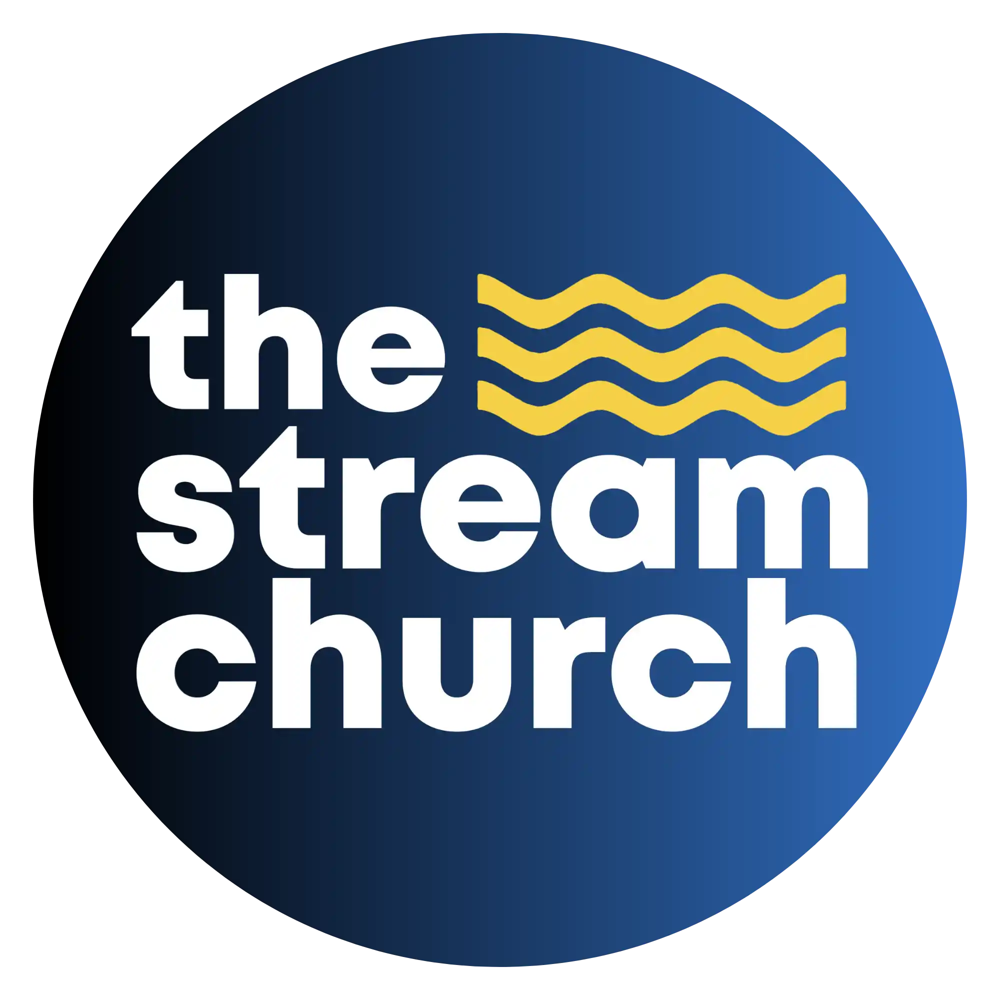

<!-- Navigation -->
<nav class="nav" id="nav">
    <div class="container">
        <div class="nav-content">
            <a href="https://thestreamchurch.org/" class="nav-logo">
                
            </a>

            <div class="nav-links">
                <a href="index.html#inicio" class="nav-link">Inicio</a>
                <div class="dropdown">
                    <a href="#" class="nav-link dropdown-toggle">Quienes somos <i data-lucide="chevron-down"
                            style="width: 14px; height: 14px; display: inline-block; vertical-align: middle; margin-left: 4px;"></i></a>
                    <div class="dropdown-menu">
                        <a href="nuestros-pastores.html" class="dropdown-item">Nuestros Pastores</a>
                        <a href="mision-vision.html" class="dropdown-item">Misión y Visión</a>
                        <a href="que-esperar.html" class="dropdown-item">Qué Esperar</a>
                        <a href="tributo-santos-sandoval.html" class="dropdown-item">Tributo: Pastor Santos Sandoval</a>
                    </div>
                </div>
                <a href="index.html#servicios" class="nav-link">Servicios</a>
                <a href="index.html#en-vivo" class="nav-link">En Vivo</a>
                <div class="dropdown">
                    <a href="#" class="nav-link dropdown-toggle">Ministerios <i data-lucide="chevron-down"
                            style="width: 14px; height: 14px; display: inline-block; vertical-align: middle; margin-left: 4px;"></i></a>
                    <div class="dropdown-menu">
                        <a href="index.html#ministerio-artes" class="dropdown-item">Ministerio de Artes</a>
                        <a href="obras-y-misiones.html" class="dropdown-item">Obras y Misiones</a>
                        <a href="fundacion-gracia.html" class="dropdown-item">Grace Foundation</a>
                    </div>
                </div>
                <a href="index.html#eventos" class="nav-link">Eventos</a>
                <a href="index.html#comunidad" class="nav-link">Comunidad</a>
                <div class="dropdown">
                    <a href="#" class="nav-link dropdown-toggle">Recursos <i data-lucide="chevron-down"
                            style="width: 14px; height: 14px; display: inline-block; vertical-align: middle; margin-left: 4px;"></i></a>
                    <div class="dropdown-menu">
                        <a href="confecion-de-fe-de-los-bautistas.html" class="dropdown-item">Confesión de Fe</a>
                        <a href="catecismo-menor-bautista.html" class="dropdown-item">Catecismo Menor</a>
                    </div>
                </div>
            </div>

            <button class="mobile-menu-btn" id="mobileMenuBtn" aria-label="Menu">
                <i data-lucide="menu" style="width: 20px; height: 20px; color: white;" id="menuIcon"></i>
            </button>
        </div>
    </div>
</nav>

<!-- Mobile Menu - Outside nav to ensure it works on all sections -->
<div class="mobile-menu" id="mobileMenu">
    <div class="mobile-menu-inner">
        <a href="index.html#inicio">Inicio</a>
        <div>
            <a href="#" class="mobile-dropdown-toggle" onclick="toggleMobileDropdown(event)">Quienes somos <i
                    data-lucide="chevron-down"
                    style="width: 16px; height: 16px; float: right; transition: transform 0.3s ease;"></i></a>
            <div class="mobile-dropdown-menu">
                <a href="nuestros-pastores.html" style="padding-left: 32px; font-size: 14px;">Nuestros Pastores</a>
                <a href="mision-vision.html" style="padding-left: 32px; font-size: 14px;">Misión y Visión</a>
                <a href="que-esperar.html" style="padding-left: 32px; font-size: 14px;">Qué Esperar</a>
                <a href="tributo-santos-sandoval.html" style="padding-left: 32px; font-size: 14px;">Tributo: Pastor
                    Santos Sandoval</a>
            </div>
        </div>
        <a href="index.html#servicios">Servicios</a>
        <a href="index.html#en-vivo">En Vivo</a>
        <div>
            <a href="#" class="mobile-dropdown-toggle" onclick="toggleMobileDropdown(event)">Ministerios <i
                    data-lucide="chevron-down"
                    style="width: 16px; height: 16px; float: right; transition: transform 0.3s ease;"></i></a>
            <div class="mobile-dropdown-menu">
                <a href="index.html#ministerio-artes" style="padding-left: 32px; font-size: 14px;">Ministerio de
                    Artes</a>
                <a href="obras-y-misiones.html" style="padding-left: 32px; font-size: 14px;">Obras y Misiones</a>
                <a href="fundacion-gracia.html" style="padding-left: 32px; font-size: 14px;">Grace Foundation</a>
            </div>
        </div>
        <a href="index.html#eventos">Eventos</a>
        <a href="index.html#comunidad">Comunidad</a>
        <div>
            <a href="#" class="mobile-dropdown-toggle" onclick="toggleMobileDropdown(event)">Recursos <i
                    data-lucide="chevron-down"
                    style="width: 16px; height: 16px; float: right; transition: transform 0.3s ease;"></i></a>
            <div class="mobile-dropdown-menu">
                <a href="confecion-de-fe-de-los-bautistas.html" style="padding-left: 32px; font-size: 14px;">Confesión
                    de Fe</a>
                <a href="catecismo-menor-bautista.html" style="padding-left: 32px; font-size: 14px;">Catecismo
                    Menor</a>
            </div>
        </div>
    </div>
</div>